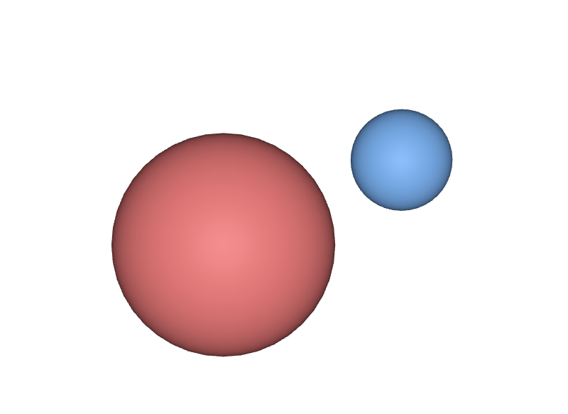
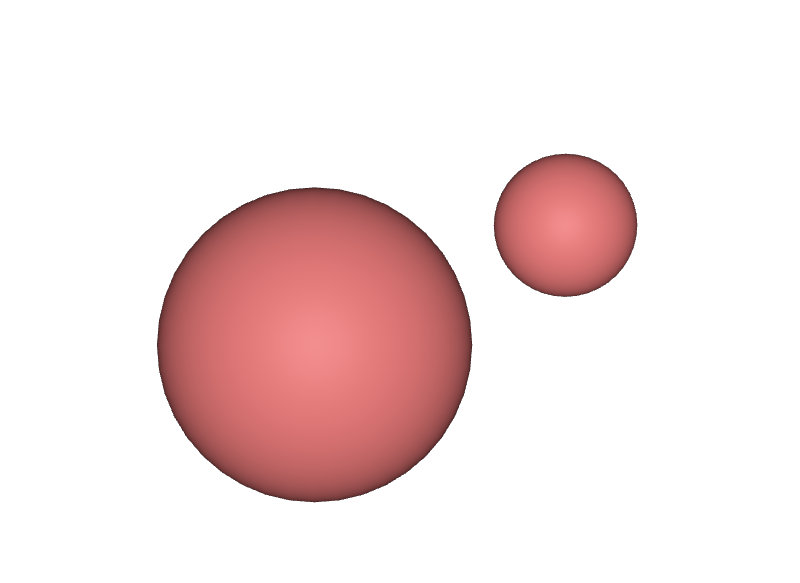

MaterialBindingAPIを適用せずにrelだけ書く
rel material:bindingだけ書いても動いてしまうことがありますが、apiSchemasにMaterialBindingAPIが入っていないと、そのPropertyはSchemaに裏付けられていない状態です。usdcheckerや下流のツールが警告します。PythonからはUsdShade.MaterialBindingAPI.Apply(prim)で適用します。
STEP 33 · MATERIAL BINDING
形とMaterialを結び、子孫へ受け継がせます
今日これだけ
公式情報に基づく説明
形とMaterialを結ぶのがBindingです。MaterialBindingAPIというApplied API Schemaを適用すると、そのPrimにrel material:bindingというRelationshipが使えるようになります。STEP 13で見たとおり、Applied API SchemaはapiSchemasに名前が積まれ、Primの型は変わりません。Meshは適用後もMeshのままです。
bindingがRelationshipであることには意味があります。STEP 06で見たように、Relationshipは値ではなくPathを対象に持ちます。だからMaterialを別の場所へ移すと参照が壊れますし、逆に、複数の形が同じMaterialを指すのは自然にできます。
もう一つの要点は、bindingが子孫へ受け継がれることです。祖先のPrimにbindingを書くと、その下にあってbindingを書いていないGprimは、すべてそのMaterialが割り当てられたものとして扱われます。Assetのすべての形に1つずつ書く必要はありません。
USDA
# Geom にだけ bind する。子孫はこれを受け継ぐ
def Scope "Geom" (
prepend apiSchemas = ["MaterialBindingAPI"]
)
{
rel material:binding = </World/Looks/Base>
# binding を書いていない。祖先の Base を受け継ぐ
def Sphere "Body"
{
double radius = 0.8
}
# 自分で bind し直しているので、こちらが勝つ
def Sphere "Knob" (
prepend apiSchemas = ["MaterialBindingAPI"]
)
{
double radius = 0.35
rel material:binding = </World/Looks/Trim>
}
}Bodyにはmaterial:bindingもapiSchemasもありません。それでもBaseが割り当てられます。Knobは自分で書いているので、そちらが優先されます。既定では対象に近い側の指定が勝つと覚えます。
結果

Bodyは祖先からBase（赤）を受け継ぎ、小さいKnobは自分で書いたTrim（青）になっています。examples/lesson-50/binding.usda / Apple USD Tools 0.25.2 のusdrecord（Hydra Storm・Metal）/ macOS 26.5.2・Apple M4Python
あるPrimに最終的にどのMaterialが割り当てられているかは、自分で階層をたどらずにComputeBoundMaterial()へ聞きます。返り値はMaterialと、その割り当てを書いたRelationshipの組です。2つ目を見れば「どのPrimに書かれた指定が効いたか」まで分かります。
from pxr import UsdGeom, UsdShade
geom = UsdGeom.Scope.Define(stage, "/Asset/Geom")
body = UsdGeom.Mesh.Define(stage, "/Asset/Geom/Body")
knob = UsdGeom.Mesh.Define(stage, "/Asset/Geom/Body/Knob")
# 祖先にだけ bind する
UsdShade.MaterialBindingAPI.Apply(geom.GetPrim()).Bind(base)
for prim in [geom.GetPrim(), body.GetPrim(), knob.GetPrim()]:
binding = UsdShade.MaterialBindingAPI(prim)
material, rel = binding.ComputeBoundMaterial()
print("%-22s -> %-22s (bindingを書いたPrim: %s)"
% (prim.GetPath(), material.GetPath(),
rel.GetPrim().GetPath() if rel else "-"))/Asset/Geom -> /Asset/Looks/Base (bindingを書いたPrim: /Asset/Geom)
/Asset/Geom/Body -> /Asset/Looks/Base (bindingを書いたPrim: /Asset/Geom)
/Asset/Geom/Body/Knob -> /Asset/Looks/Base (bindingを書いたPrim: /Asset/Geom)3つとも同じMaterialで、しかも出どころが全部/Asset/Geomだと分かります。ここでKnobに自分のbindingを足すと、Knobだけが変わります。
UsdShade.MaterialBindingAPI.Apply(knob.GetPrim()).Bind(trim)
for prim in [body.GetPrim(), knob.GetPrim()]:
material, _ = UsdShade.MaterialBindingAPI(prim).ComputeBoundMaterial()
print("%-22s -> %s" % (prim.GetPath(), material.GetPath()))/Asset/Geom/Body -> /Asset/Looks/Base
/Asset/Geom/Body/Knob -> /Asset/Looks/Trim強さを逆転させる
既定では近い側が勝ちますが、これでは困る場面があります。たとえば、他所から持ってきたAssetの中でMaterialが個別に指定されていて、それをまとめて別のMaterialに差し替えたいときです。子孫を1つずつ書き換えるのは現実的ではありません。
そのために、bindingのRelationshipにbindMaterialAs = "strongerThanDescendants"というMetadataを付けられます。付けた側が、下にあるすべてのbindingより強くなります。
def Scope "Geom" (
prepend apiSchemas = ["MaterialBindingAPI"]
)
{
rel material:binding = </World/Looks/Base> (
bindMaterialAs = "strongerThanDescendants"
)
def Sphere "Body" { double radius = 0.8 }
# 自分で bind し直しても、祖先の strongerThanDescendants に負ける
def Sphere "Knob" (
prepend apiSchemas = ["MaterialBindingAPI"]
)
{
double radius = 0.35
rel material:binding = </World/Looks/Trim>
}
}
KnobはTrim（青）を指したままです。それでも祖先のstrongerThanDescendantsが勝ち、両方ともBase（赤）になりました。examples/lesson-50/binding-stronger.usda / Apple USD Tools 0.25.2 のusdrecord（Hydra Storm・Metal）/ macOS 26.5.2・Apple M4binding = UsdShade.MaterialBindingAPI(geom.GetPrim())
binding.Bind(base, UsdShade.Tokens.strongerThanDescendants)
for prim in [body.GetPrim(), knob.GetPrim()]:
material, _ = UsdShade.MaterialBindingAPI(prim).ComputeBoundMaterial()
print("%-22s -> %s" % (prim.GetPath(), material.GetPath()))
print("bindMaterialAs:", binding.GetMaterialBindingStrength(
binding.GetDirectBindingRel()))/Asset/Geom/Body -> /Asset/Looks/Base
/Asset/Geom/Body/Knob -> /Asset/Looks/Base
bindMaterialAs: strongerThanDescendantsKnobのbinding自体は消えていません。書かれたまま、強さの規則で負けています。「消さずに上書きする」というのは、STEP 37のoverやSTEP 55のList Editingと同じ、OpenUSDに一貫した考え方です。
Diagram
purposeとCollection
ここまでは1種類のbindingだけを扱いました。実務では、これに2つの軸が加わります。用語だけ押さえておきます。
Material Purposeは、用途ごとにMaterialを使い分ける仕組みです。material:bindingのほかにmaterial:binding:previewとmaterial:binding:fullを書き分けられます。previewは画面で素早く見るための軽いMaterial、fullは最終レンダリング用です。用途を指定せずに書いたmaterial:bindingは、どちらの用途にも使える指定として扱われます。
Collection-based bindingは、階層と関係なく「このPrimたち」とまとめて指定する方法です。STEP 13で見たCollectionAPIで対象の集まりを作り、それに対してMaterialを結びます。階層がMaterialごとに整理されていないAssetで有効です。
よくある間違い
rel material:bindingだけ書いても動いてしまうことがありますが、apiSchemasにMaterialBindingAPIが入っていないと、そのPropertyはSchemaに裏付けられていない状態です。usdcheckerや下流のツールが警告します。PythonからはUsdShade.MaterialBindingAPI.Apply(prim)で適用します。
継承と強さの規則を自前で実装すると、strongerThanDescendantsやCollection-based bindingを取りこぼします。必ずComputeBoundMaterial()に聞きます。
bindingはPathを指すRelationshipです。/Asset/Looksの中でMaterialの名前を変えたり場所を移したりすると、指し先が無くなります。STEP 93で扱う壊れた参照と同じ壊れ方です。
階層を組み替えるとき、Meshだけをコピーするとmaterial:bindingだけが残り、指し先が存在しないという状態になります。STEP 83で実際にこれを起こして確かめます。
Glossary
rel material:bindingで記述する。apiSchemasに積まれる。weakerThanDescendants（既定）とstrongerThanDescendantsがある。previewとfull、および用途を限定しない指定がある。CollectionAPIで作ったPrimの集まりに対してMaterialを結ぶ方法。Official references
確認日: